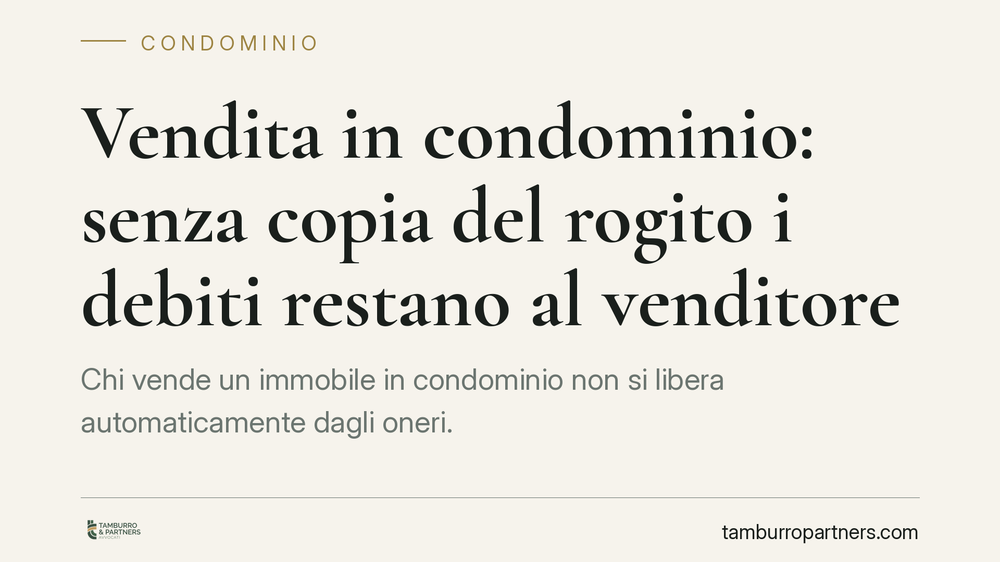

Vendita in condominio: senza copia del rogito i debiti restano al venditore
Chi vende un immobile in condominio non si libera automaticamente dagli oneri. Una recente pronuncia del Tribunale di Treviso ribadisce che, senza la consegna all'amministratore della copia autentica del rogito, il venditore resta obbligato in solido con l'acquirente per i contributi condominiali. Un adempimento formale spesso trascurato, ma con conseguenze economiche concrete.

Il caso deciso a Treviso
Un ex proprietario si è visto richiedere dall'amministratore il pagamento di contributi condominiali maturati dopo la vendita dell'appartamento. La sua difesa era intuitiva: l'immobile non era più suo, quindi il debito spettava al nuovo acquirente.
Il Tribunale di Treviso ha respinto questa tesi. Il punto decisivo non è la data del rogito, ma il momento in cui l'amministratore riceve prova documentale del trasferimento. Fino a quel momento, per il condominio, il proprietario è ancora il venditore.
Inquadramento normativo
La regola è fissata dall'art. 63, comma 5, delle disposizioni di attuazione del Codice civile, come riformato dalla Legge n. 220/2012 (la riforma del condominio). La norma stabilisce che chi cede diritti su unità immobiliari resta obbligato, in solido con l'avente causa (l'acquirente), per i contributi maturati fino al momento in cui trasmette all'amministratore copia autentica del titolo che determina il trasferimento del diritto.
La formula è netta. Il legislatore non parla di conoscenza informale del passaggio di proprietà, né di comunicazione verbale. Serve un atto formale: la copia autentica del rogito, ossia una copia conforme all'originale rilasciata dal notaio, consegnata all'amministratore.
La solidarietà significa che l'amministratore può chiedere l'intero importo indifferentemente al venditore o all'acquirente, salvo poi il diritto di chi ha pagato di rivalersi sull'altro. Ma questo è un problema successivo: intanto il condominio incassa da chi trova più solvibile o più facilmente aggredibile.
Perché la consegna del rogito è dirimente
La ratio è di tutela del condominio. L'amministratore deve poter individuare con certezza il soggetto tenuto al pagamento, senza dover indagare su compravendite di cui non è parte. La copia autentica del rogito è lo strumento che offre questa certezza documentale.
Non bastano quindi soluzioni approssimative: una fotocopia semplice, una mail di avviso, la parola del venditore in assemblea. La norma richiede la copia autentica, e i giudici la applicano alla lettera.
Cosa cambia per chi vende
Per il venditore la conseguenza pratica è pesante. Anche dopo aver ceduto l'immobile e incassato il prezzo, può restare esposto ai debiti condominiali dell'acquirente per tutto il periodo in cui l'amministratore ignora formalmente la vendita.
Si pensi all'acquirente che non paga le rate ordinarie o straordinarie per mesi: il condominio, trovandosi ancora il venditore nei propri registri, si rivolgerà a quest'ultimo, spesso più raggiungibile e patrimonialmente affidabile.
È un rischio che nasce da un semplice ritardo o dalla dimenticanza di un adempimento formale, dopo aver concluso l'affare più importante.
Cosa fare in concreto
- Trasmetti subito la copia autentica del rogito all'amministratore, non appena disponibile dal notaio. Non affidarti a comunicazioni informali o a copie semplici.
- Usa un canale tracciabile: PEC o raccomandata con avviso di ricevimento, così da poter provare data e contenuto della consegna.
- Conserva la prova dell'invio insieme alla ricevuta di consegna: sarà l'elemento decisivo in caso di contestazione futura.
- Verifica la nota di ricezione dell'amministratore o sollecita conferma scritta dell'aggiornamento dell'anagrafe condominiale.
- Coordina l'adempimento con il notaio in fase di rogito: alcuni studi si occupano direttamente della trasmissione, ma è bene accertarsene e non darlo per scontato.
Per l'acquirente vale il consiglio speculare: prima di firmare, richiedere all'amministratore la situazione contabile aggiornata dell'unità, così da conoscere eventuali arretrati che potrebbero riguardarlo in solido.
La lezione della pronuncia trevigiana è semplice ma spesso ignorata: la vendita libera il venditore solo quando il condominio ne ha prova formale. Un foglio consegnato in tempo può evitare contenziosi che, altrimenti, arrivano anni dopo la firma dal notaio.
Disclaimer
Contributo informativo a cura di Tamburro & Partners - Avv. Giuseppe Tamburro. Non costituisce parere legale.
Ogni condominio ha una storia a sé.
Se gestisci un'amministrazione e vuoi un confronto su una specifica questione condominiale, scrivi allo studio. Ti rispondiamo entro un giorno lavorativo.